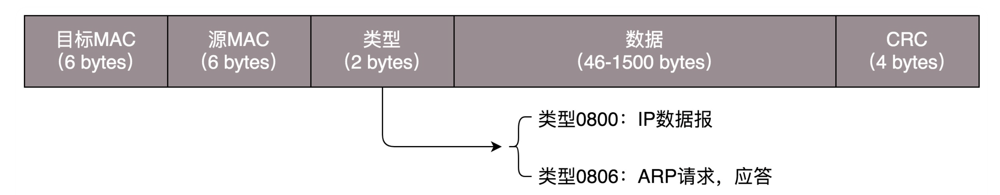
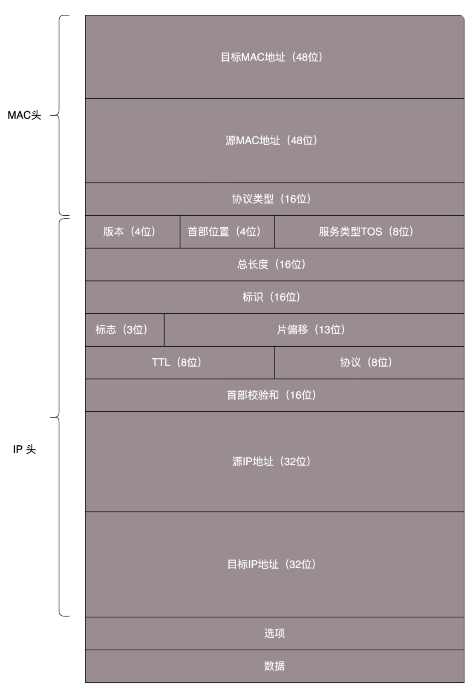
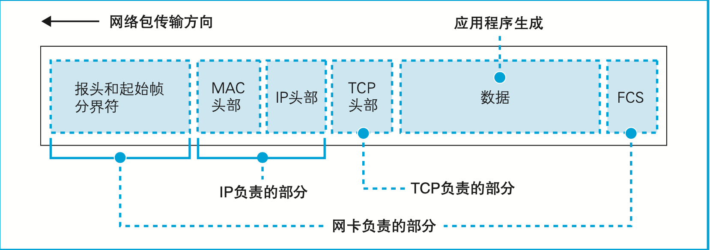
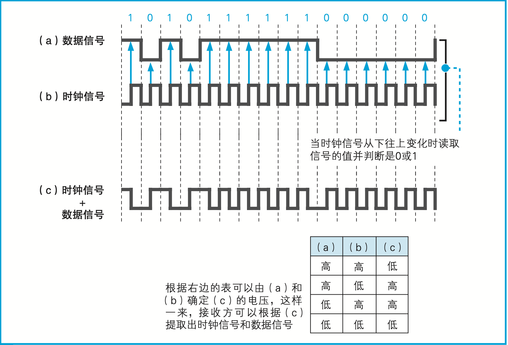

数据链路层 1¶
Note
也称为MAC层。
MAC协议主要有三个作用:
1. 为IP模块发送和接收IP数据报
2. 为ARP模块发送ARP请求和接收ARP应答
3. 为RARP发送RARP请求和接收RARP应答
数据链路层的协议还是很多的:
1. 以太网协议
2. loopback协议
令牌环，还有FDDI
PPP协议(点对点协议)（就是adsl宽带）:是从SLIP的替代品
实例说明:
% 执行ifconfig -a命令中
eth0就是以太网接口，而lo则是loopback接口
这也说明这个主机在网络链路层上至少支持loopback协议和以太网协议
以太网（Ether-net）:
1. 1982年下面3个公司联合公布的以太网的一个标准:
a. 数字设备公司Digital Equipment Corp.
b. 英特尔公司Intel Corp.
c. Xerox公司
这个标准里面使用了一种称作CSMA/CD的接入方法
2. IEEE802提供的标准集802.3(还有一部分定义到了802.2中)也提供了一个CSMA/CD的标准
这两个标准稍有不同，TCP/IP协议对这种情况的处理方式如下:
1. 以太网的IP数据报封装在RFC894中定义
2. 而IEEE802网络的IP数据报封装在RFC1042中定义
一台主机一定要能发送和接收RFC894定义的数据报
一台主机可以接收RFC894和RFC1042的封装格式的混合数据报
一台主机也许能够发送RFC1042数据报
如主机能同时发送两种类型的分组数据,那么:
1. 发送的分组必须是可以设置的
2. 而且默认条件下必须是RFC 894分组
% 注: RFC1042在TCP/IP里面处于一个配角的地位
MTU:
每一种数据链路层协议，都有一个MTU（最大传输单元）定义
在这个定义下面，如果IP数据报过大，则要进行分片(fragmentation)，使得每片都小于MTU
注意PPP的MTU并不是一个物理定义，而是指一个逻辑定义（个人认为就是用程序控制）
可以用netstat来打印出MTU的结果，比如: netstat -in
MTU 是二层 MAC 层的概念。
MAC 层有 MAC 的头，以太网规定连 MAC 头带正文合起来，不允许超过 1500 个字节。
正文里面有 IP 的头、TCP 的头、HTTP 的头。如果放不下，就需要分片来传输。
loopback协议:
% 3点注意
1. 传给环回地址（一般是127.0.0.1）的任何数据均作为IP输入
2. 传给广播地址或多播地址的数据报复制一份传给环回接口,然后送到以太网上
这是因为广播传送和多播传送的定义包含主机本身
3. 任何传给该主机IP地址的数据均送到环回接口
lo: loopback
以太网的替代角色:
无线局域网、ADSL、FTTH
接入网方式:
ADSL: Asymmetric Digital Subscriber Line，不对称数字用户线
FTTH: Fiber To The Home，光纤到户
CATV
电话线
ISDN
专线
Note
MAC 地址是一个局域网内才有效的地址。因而，MAC 地址只要过网关，就必定会改变，因为已经换了局域网。
MAC 头部的字段:
MAC 头部(14字节)
1. 接收方 MAC 地址(48)
网络包接收方的 MAC 地址，在局域网中使用这一地址来传输网络包
2. 发送方 MAC 地址(48)
网络包发送方的 MAC 地址，接收方通过 它来判断是谁发送了这个包
3. 以太类型(16)
使用的协议类型。下面是一些常见的类型:
0000-05DC:IEEE 802.3
0800: IP协议
0806: ARP 协议
809B: AppleTalk 协议
86DD: IPv6
注: 有上面3个性质(头内容)的网络就是「以太网」

MAC 头部的字段说明¶

MAC 头部的字段说2¶
CRC:
循环冗余检测
通过 XOR 异或的算法，来计算整个包是否在发送的过程中出现了错误
网卡网络包¶
给网络包再加 3 个控制数据:
1. 开头加上「报头」(56bit)
2. 开头加上「起始帧分界符」(8bit)
3. 末尾加上用于检测错误的「帧校验序列FCS」(32bit)

网卡发送出去的包¶
「报头」是一串像 10101010...这样 1 和 0 交替出现的比特序列，长度为 56 比特，它的作用是确定包的读取时机
「起始帧分界符」末尾比特 排列有少许变化。接收方以这一变化作为标记，从这里开始提取网络包数据。
也就是说，起始帧分界符是一个用来表示包起始位置的标记。
「末尾的 FCS(帧校验序列)」用来检查包传输过程中因噪声导致的波形紊乱、数据错误
是通过一个公式对包中从头到尾的所有内容进行计算而得出来的。
Note
当信号连续为 1 或连续为 0 时，比特之间的界限就会消失，如果将时钟信号叠加进去，就可以判断出比特之间的界限了。

通过时钟测量读取信号的时机¶
双绞线的种类:
1. 五类(CAT-5)
用于 10 Mbit/s(10BASE-T)和 100 Mbit/s(100BASE-TX)以太网
可以最高 125 MHz 的频率在最长 100 米的距离内传输信号
2. 超五类(CAT-5e)
用于千兆(1000BASE-T)以太网，对五类网线进行了改良
改善了串扰，也向下兼容 10BASE-T 和 100BASE-TX
3. 六类(CAT-6)
支持最高 250 MHz 的信号传输，
用于 1000BASE-TX 规格的千 兆以太网和 10GBASE-T 规格的万兆以太网，
同时向下兼容 10BASE-T、100BASE-TX 和 1000BASE-T
4. 超六类(CAT-6A)
对六类网线进行了改良，改善了外部串扰
兼容 10GBASE-T、 1000BASE-TX、1000BASE-T、100BASE-TX 和 10BASE-T
5. 七类(CAT-7)
支持最高 600 MHz的高速信号传输
兼容 10GBASE-T、 1000BASE-TX、1000BASE-T、100BASE-TX 和 10BASE-T
ADSL¶
使用多个频率合成的波来传输信号，这样一来，能够表示的比特数就可以成倍提高了。ADSL 就是利用了这一性质，通过多个波增加能表示的比特数来提高速率的。根据噪声等条件的不同，每个波表示的比特数是可变的。也就是说，噪声小的频段可以给波分配更多的比特，噪声大的频段则给波分配较少的比特，每个频段表示的比特数加起来，就决定了整体的传输速率。ADSL 技术中，上行方向(用户到互联网)和下行方向(互联网到用户)的传输速率是不同的。如果上行使用 26 个频段，下行则可以使用 95 个或者 223 个频段，波的数量不同，导致了上下行速率不同。
FTTH¶
FTTH: Fiber To The Home，光纤到户
数字信息转换成电信号，然后再将电信号转换成光信号
光纤特点:
单模:
单模光纤的纤芯直径就是按照只允许相位一致的最小角度的光进入而设计的
优点:
能通过的光线较少，相应地对于光源和光敏元件的性能要求就较高，但信号的失真会比较小
多模:
多模光纤的纤芯比较粗，入射角比较大的光也可以进入
这样一来，在相位一致的角度中，不仅角度最小的可以在光纤中传导，其他角度更大一些的也可以
优点:
对光源和光敏元件的性能要求也就较低，从而可以降低光源和光敏元 件的价格